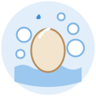
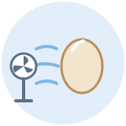
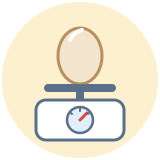
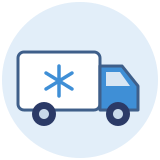
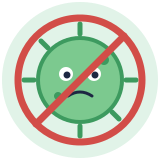
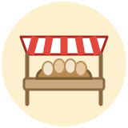

雞蛋出門前
洗選蛋是什麼？
洗澡、照燈、量體重、蓋印章才出門到超市
雞蛋從雞媽媽那裡收集好，會先送到「洗選廠」。在那裡洗乾淨、檢查、分大小、裝盒子，再送去超市。這樣的蛋，就叫做洗選蛋。

洗選廠裡發生什麼事
雞蛋出門前的 6 個步驟
-
洗澡
把蛋殼上的髒東西洗掉。
洗澡水要比蛋熱一點喔！蛋碰到冷水會縮一下，髒水就可能跑進蛋殼的小洞裡。
-

吹乾
用風把蛋吹乾，細菌就不容易長出來。
-
照燈
用燈從下面照，找出有裂縫的壞蛋。
-

量體重
秤一秤，把蛋分成大的、小的。
-

蓋印章、裝盒子
每顆蛋都印上字，再放進盒子裡。
-

坐冷藏車
坐著冷冷的車子，送到超市的冰櫃。
為什麼要洗選
洗選有什麼好處？

細菌變少蛋殼外面可能有細菌，洗乾淨就比較安全。
有裂縫的蛋，在照燈的時候就被挑掉了。
知道從哪裡來看蛋殼上的字，就知道是哪個農場的蛋。
看懂蛋殼上的字
蛋殼上的字是什麼意思？
洗選蛋的蛋殼上，會印兩行字。第一行告訴你蛋從哪裡來，第二行有日期和一個字母。字母會告訴你，雞媽媽住在哪一種家。
點點看每個字母：
圖是畫給小朋友看的樣子，真的蛋殼上印的字會不一樣。想知道每一種家長怎樣，去看飼養方式。
比一比
洗選蛋和沒有洗的蛋
洗乾淨了、檢查過了、蛋殼有印字，放在超市的冰櫃裡。

散裝蛋沒有洗過，蛋殼可能髒髒的，常放在市場的攤子上，看不出是哪天的蛋。
在家裡
蛋買回家以後
要這樣做
- 買回家，馬上放冰箱。
- 要煮之前，再洗蛋。
- 摸過生蛋，要用肥皂洗手。
不要這樣做
- 不要把洗選蛋放在外面不冰。
- 不要先洗好再放冰箱。
- 有裂縫的蛋，不要吃。

為什麼一定要放冰箱？
蛋殼外面本來有一層看不見的保護膜。洗澡的時候，保護膜也被洗掉了，所以洗選蛋要住在冰箱裡。
小補充：「洗選蛋就是先洗澡、照 X 光、量體重、蓋印章，才出門到超市的雞蛋。」
考考你
洗選蛋小測驗
給爸爸媽媽看（比較詳細的說明）
洗選蛋的定義
依照台灣的食品良好衛生規範（GHP），洗選蛋要經過清洗、風乾、選別、包裝、標示等流程。只用水或酒精擦拭的蛋，不算洗選蛋。照蛋是用燈光檢查裂紋、血斑等異常。
為什麼要洗選
蛋殼外可能沾有沙門氏菌。2023 年台灣曾發生越南麵包食物中毒案，原因是製作蛋黃醬前沒有把蛋殼清潔乾淨。洗選蛋可追溯牧場、洗選廠與生產日期，出問題時能快速回收。
逐顆噴印新制
2026 年 7 月 1 日起，洗選業者生產的洗選蛋都應逐顆噴印兩行資訊並登錄溯源資訊，違者最高罰新台幣 3 萬元。第一行是溯源編碼（可辨識牧場及洗選廠），第二行是包裝日期與飼養方式：O 有機、F 放牧、B 平飼、E 豐富化籠飼、C 一般籠飼。
洗選蛋和散裝蛋
| 洗選蛋 | 散裝蛋 | |
|---|---|---|
| 蛋殼 | 洗乾淨了 | 可能沾有雞糞、羽毛 |
| 檢查 | 有照蛋，挑掉裂蛋 | 不一定有 |
| 來源和日期 | 每顆都有噴印，查得到 | 只有外箱貼標籤 |
| 保存 | 一定要冷藏 | 常放在常溫攤位 |
| 價格 | 每顆大約貴 0.5～1 元 | 比較便宜 |
台灣現況
- 目前洗選比例約 4 成多，投入洗選的業者約 113 家；業者預估未來 2～3 年可提高到約 6 成 5～7 成。
- 一座大型洗選場（含土地、設備、冷藏庫、冷鏈車）至少要新台幣 2～3 億元，所以不是每個蛋農都做得起。
- 台灣原本規劃 2020 年全面洗選，後來暫緩，目前以逐顆噴印逐步推動。
在家保存
洗選過程會洗掉蛋殼表面的天然保護膜，所以洗選蛋要冷藏；買回家不要先洗再冰，要煮之前再洗。做沙拉、三明治這類不再加熱的食物前，摸過生蛋一定要洗手。
資料來源：中央社〈蛋殼上食安革命／逐顆噴印上路 一顆0.5元成本藏台灣全面洗選魔鬼細節〉，2026 年 9 月 13 日，cna.com.tw。洗選比例、業者家數和成本是報導中業者與協會提供的數字，會隨時間改變。
繼續探險